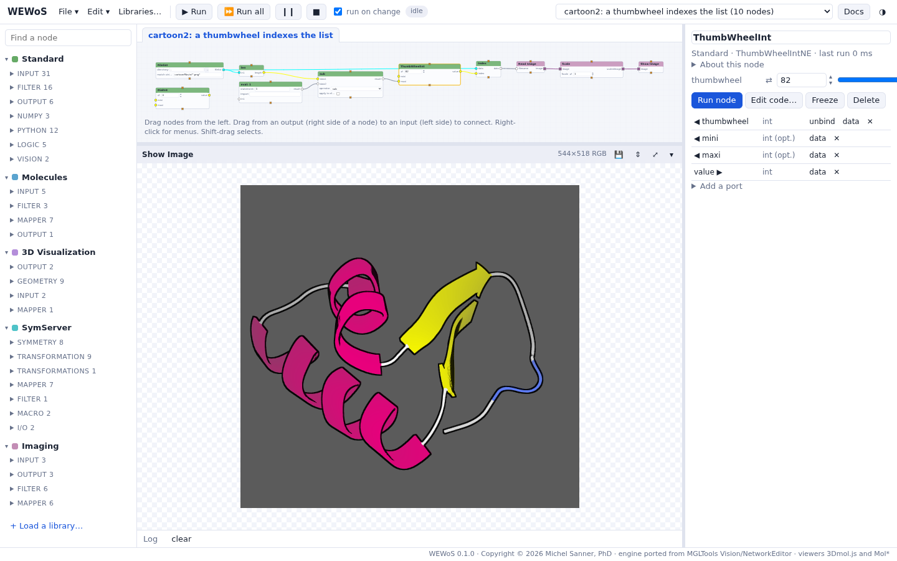
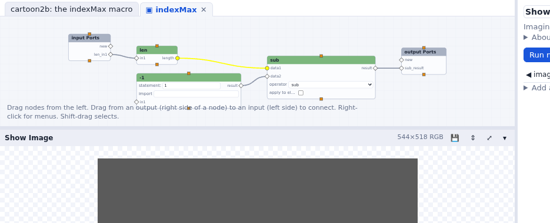
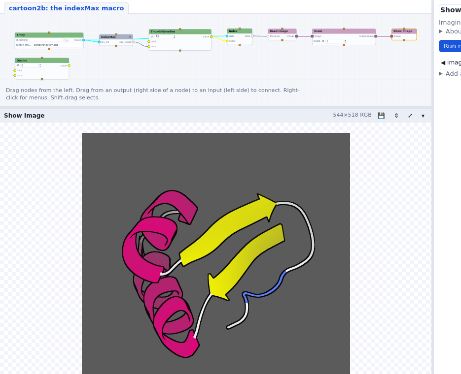

Indexing a list; macros
A thumbwheel picks one frame of the list; three nodes that compute its range become one macro node.
Start from cartoon1b: iterate over a file list (or your own network from the previous tutorial). Instead of playing all the frames, we want to choose one with a thumbwheel, whose range follows the length of the list.
A thumbwheel that indexes the list
- Delete the iterate node. Drag an Index node (Standard > Filter): connect
Filelist's
filelistto itsdata, and itsdataoutput to Read Image'sfilename. - Drag a ThumbWheelInt (Standard > Input). Index's
indexinput has a widget: right-click it and choose Unbind (show the port), then connect the ThumbWheelInt'svalueto it. Turning the wheel now shows another frame. - The largest index is the length of the list minus one. A len node (Standard >
Python) gives the length: connect Filelist to its
in1. - Subtract one with an Op2 node (Standard > Filter, operator sub), whose
second operand comes from an eval node (Standard > Input) that evaluates
1. Connect len to Op2'sdata1, eval to itsdata2, and Op2'sresultto the ThumbWheelInt'smaxiinput. - Right-click the thumbwheel and choose Options…: set its minimum to 0 (Vision's option panel). The same dialog sets its maximum, its step, and how much one turn changes it.

mini and maxi inputs are in the parameter column.Checkpoint cartoon2: a thumbwheel indexes the list
Make a macro
len, eval and Op2 together compute "the last index of a list", which would be useful elsewhere. Let's make them one node.
- Shift-click len, eval and Op2 to select the three of them.
- Right-click one of them and choose Group into a macro…; name it
indexMax. The three nodes become one macro node. The connections that crossed the group's edge become its ports, named after the node and port they reach inside: an input from Filelist (len_in1) and an output to the ThumbWheelInt (Op2_result; in the tutorial's network, whose Op2 node is named sub,sub_result). - Double-click indexMax to open it in a tab. Its inputs come out of the input Ports node on the left, its outputs go into the output Ports node on the right.

new port of input
Ports or output Ports adds a port to the macro.
Checkpoint cartoon2b: the indexMax macro
In Vision you made an empty macro from the Edit menu, cut the three nodes,
pasted them inside, and connected them to the macro's input and output nodes yourself. Group
into a macro does all of that; Explode macro undoes it.
Keeping nodes; making an application
Vision could save a changed node, or a macro, to a user library from the node's menu, and turn a network into an application with a user panel holding the widgets that matter. Neither is ported:
- to reuse a node, copy and paste it (Ctrl-C / Ctrl-V, within a network), or write it in a library file that WEWoS loads (see Writing your own nodes);
- the parameter column plays the user panel's part: Show in the panel only moves a widget
out of its node, and the column shows the selected node's widgets. A saved network also runs
without the page:
bin/wewos run cartoon2b.wnet.json --set ThumbWheelInt.thumbwheel=42.